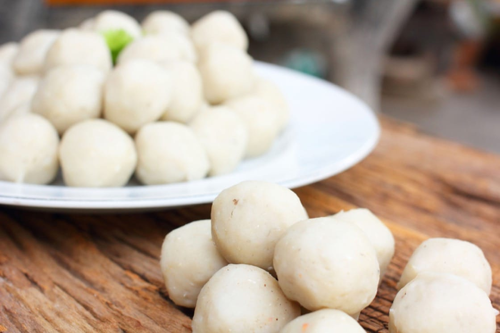

Fishballs Recipe

Description
These are fishballs, an asian style dish that is typically made with pasted fish that are then rolled
into balls and then steamed to cook. Known as chinese cuisine, the types of fishball can vary from size,
color, taste etc. This recipe will include a meat filling as well as the fish paste that we will use to create the balls.
Fishballs are a relatively simple dish to create, as many opt to purchase pre-made frozen fishballs.
Then, it is boiled to taste. For this recipe, we will be making the fishballs from scratch.
Ingredients
- 500 grams of any fish, some popular choices: Mackerel, Sole, Cream Dory, and Tilapia
- 1 tablespoon of onion powder
- 1 teaspoon of garlic powder
- 2 teaspoons of salt - more or less
- 1 teaspoon of sugar
- 1 teaspoon of ground white pepper
- 1 tablespoon of oil
- 1/2 cup flour
- 1/2 cup cornstarch
- 1 teaspoon baking powder
- 1 large egg white
- 1/2 cup ice cold water
- More oil for deep frying
Steps
- Cut fish fillet into small pieces and place in a food processor or blender.
- Add onion powder, garlic powder, salt, sugar, ground pepper, oil, flour, starch, baking powder and egg white.
- Pulse for a couple of minutes gradually adding the ice water in between until it get a homogeneous texture.
About 2-3 minutes depending on speed of processor. Transfer content to a bowl.
- Prepare a large bowl of lukewarm water (40°C).
- Shaping. Lightly grease one hand with oil. Then scoop a fistful of mixture. Create a small round opening with
your thumb and index finger. Then gently squeeze the mixture to push it up and out through the opening to make
a small ball. Using a spoon, scoop the ball and transfer it to the lukewarm water. Do this to the rest of the mixture.
- Fill a large pot with enough water and bring it to a very gentle simmer. Scoop the balls using a strainer and transfer them
in the hot water. Do not let the water into a rolling boil or it might break the fish balls. Cook for 20 minutes then remove
the balls using a strainer and transfer them in a colander to drain excess water.
- Let them cool down and store in ziplocks to freeze or you can fry them and serve with fish ball sauce.